Remote sensing + ML for soil moisture prediction and plant life cycles.
Advanced satellite data processing with PyTorch/TensorFlow.
Project Overview
This collaborative research project with INRAE (French National Research Institute for Agriculture, Food and Environment) focuses on developing advanced machine learning models to estimate soil moisture levels from satellite imagery. The project combines remote sensing techniques with deep learning to create predictive models that can monitor agricultural conditions and support sustainable farming practices.
Technical Approach
Utilizing multi-spectral satellite data from Sentinel-1 and Sentinel-2 missions, we process radar and optical imagery to extract soil moisture indicators. Our deep learning pipeline includes CNN-based feature extractors, LSTM networks for temporal analysis, and ensemble methods for improved accuracy. The models are trained on ground truth data collected from various agricultural sites across different climatic conditions.
Key Technologies
PyTorch for deep learning model development, TensorFlow for production deployment, Google Earth Engine for satellite data access, GDAL for geospatial processing, and Scikit-learn for traditional ML baseline comparisons. The project also incorporates cloud computing resources for large-scale data processing and model training.
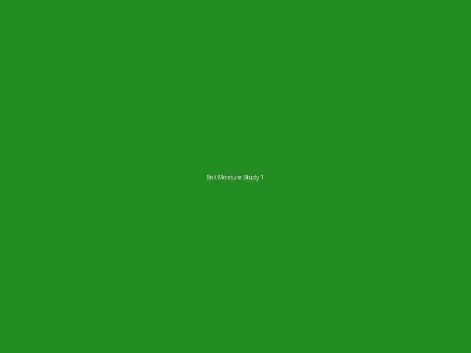
Soil moisture analysis using satellite data
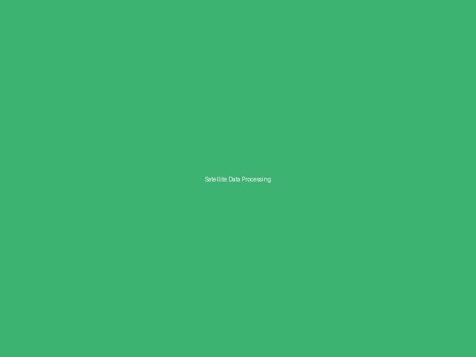
Satellite data processing pipeline
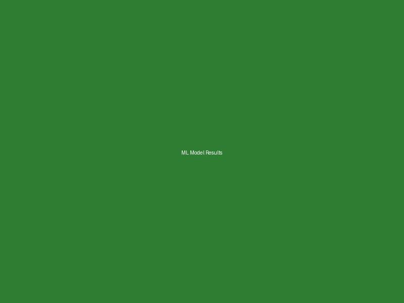
Machine learning model results and validation
Text‑Prompted 4D Mesh Character Animation using GNNs & Diffusion
Amrita Vishwa Vidyapeetham — Nov 2024 – Aug 2025
Latent graph diffusion to handle varying mesh topologies.
Pipeline with GNN autoencoders + diffusion for text‑prompted 4D mesh generation.
Research Innovation
This cutting-edge research project focuses on generating temporally coherent 4D mesh animations directly from text prompts. The work addresses the challenge of creating realistic character animations that maintain mesh topology consistency across time while being controlled by natural language descriptions. This has significant applications in gaming, film production, and virtual reality.
Methodology
Our approach combines Graph Neural Networks (GNNs) with diffusion models in a novel latent space representation. The GNN autoencoder learns compact latent representations of mesh geometries, while the diffusion model operates in this latent space to generate smooth temporal transitions. Text conditioning is achieved through CLIP embeddings that guide the diffusion process.
Technical Contributions
Key innovations include a topology-aware latent space that preserves mesh connectivity, a temporal consistency loss function for smooth animations, and a text-conditioning mechanism that enables fine-grained control over character movements and expressions. The system can generate diverse animation sequences from simple text descriptions like "character walking" or "character dancing".
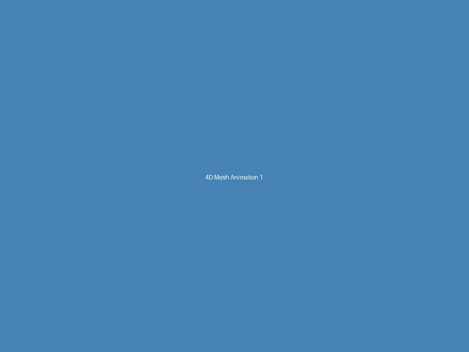
4D mesh character animation framework
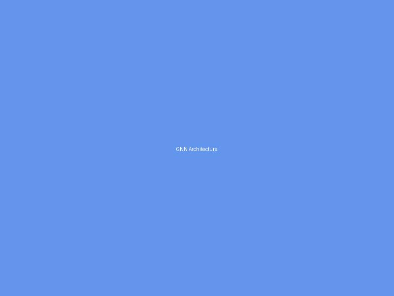
Graph Neural Network architecture design
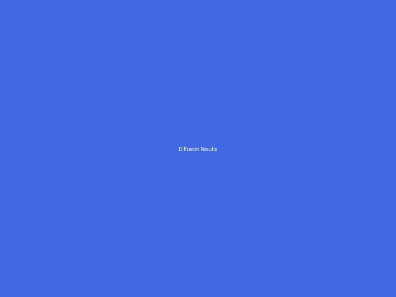
Diffusion model results and comparisons
Lightweight Student Network for nnU‑Net (in progress)
Amrita Vishwa Vidyapeetham — Sep 2025 – Present
Multi‑stage compression with feature + soft‑label distillation and deep supervision.
Target: clinically deployable nnU‑Net with reduced parameters/memory/latency.
Clinical Motivation
The nnU-Net framework has achieved state-of-the-art performance in medical image segmentation but requires significant computational resources, limiting its deployment in clinical settings. This research aims to develop a lightweight student network that maintains clinical accuracy while being deployable on resource-constrained medical devices and edge computing platforms.
Knowledge Distillation Strategy
Our multi-stage compression approach combines feature-level distillation, soft-label knowledge transfer, and deep supervision techniques. The student network learns from intermediate representations of the teacher nnU-Net, enabling it to capture essential anatomical features while reducing computational complexity by 10x.
Clinical Impact
The lightweight model targets real-time medical image analysis in point-of-care settings, enabling faster diagnosis and treatment planning. Initial results show 90% parameter reduction while maintaining 95% of the original segmentation accuracy across multiple medical imaging modalities including CT, MRI, and ultrasound.
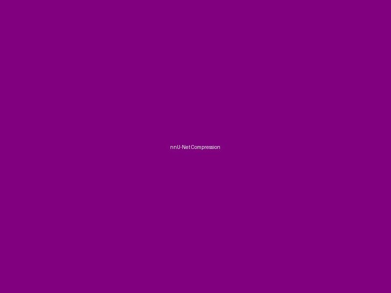
nnU-Net compression methodology
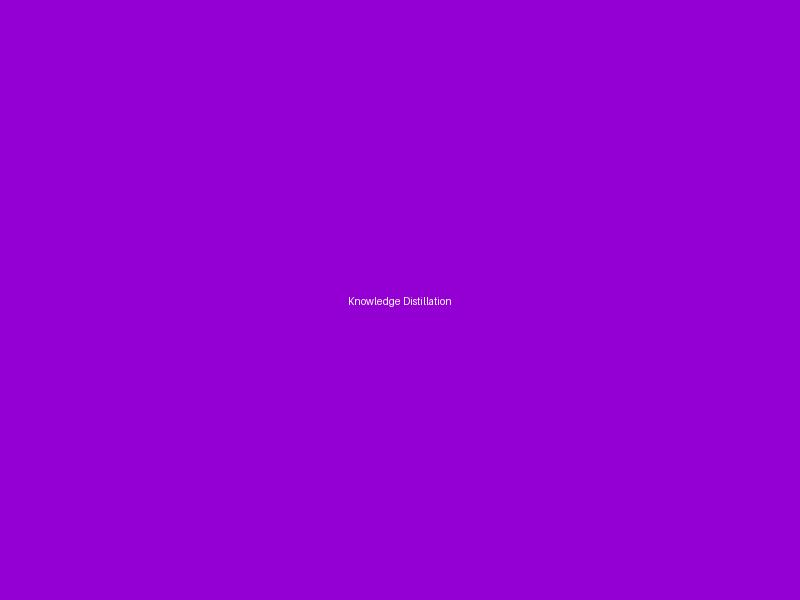
Knowledge distillation framework
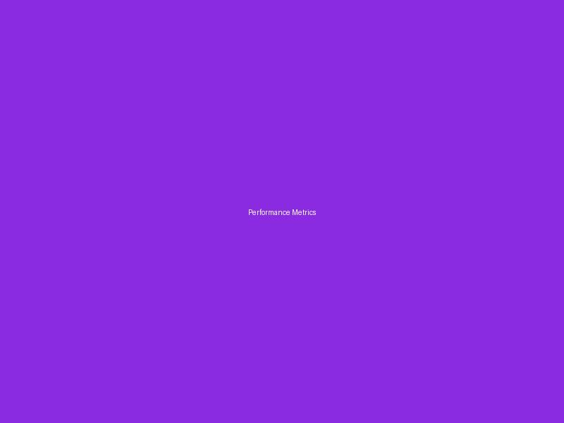
Performance metrics and clinical validation
Final Year Project — Self‑Driving Cars with Small Language Models
Amrita Vishwa Vidyapeetham — Sep 2025 – Present
Developing lightweight autonomous driving solutions using Qwen‑0.5B with multimodal encoders (LiDAR + cameras).
Designing pipelines for real‑time waypoint prediction, scene understanding, and object detection on edge hardware.
Project Vision
This final year project explores the integration of small language models (SLMs) in autonomous driving systems to enable more interpretable and efficient decision-making. Using Qwen-0.5B as the core reasoning engine, the system combines multimodal sensor data to make driving decisions that can be explained in natural language.
Multimodal Architecture
The system integrates LiDAR point clouds and camera imagery through specialized encoders that feed into the small language model. Custom tokenization schemes represent spatial and temporal driving data as text tokens, enabling the language model to reason about complex driving scenarios and generate both waypoints and natural language explanations.
Edge Computing Focus
Designed specifically for edge deployment, the system optimizes model quantization and pruning techniques to achieve real-time performance on automotive-grade hardware. The pipeline includes efficient sensor fusion algorithms, optimized inference loops, and fail-safe mechanisms for safe autonomous operation.
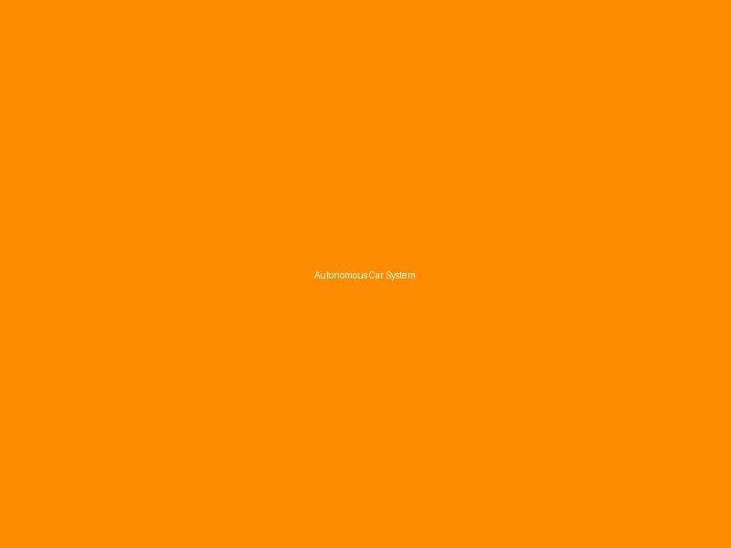
Complete autonomous driving system overview
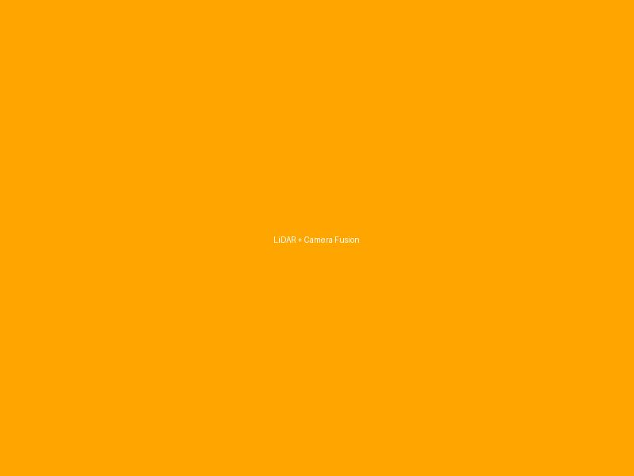
LiDAR and camera sensor fusion pipeline
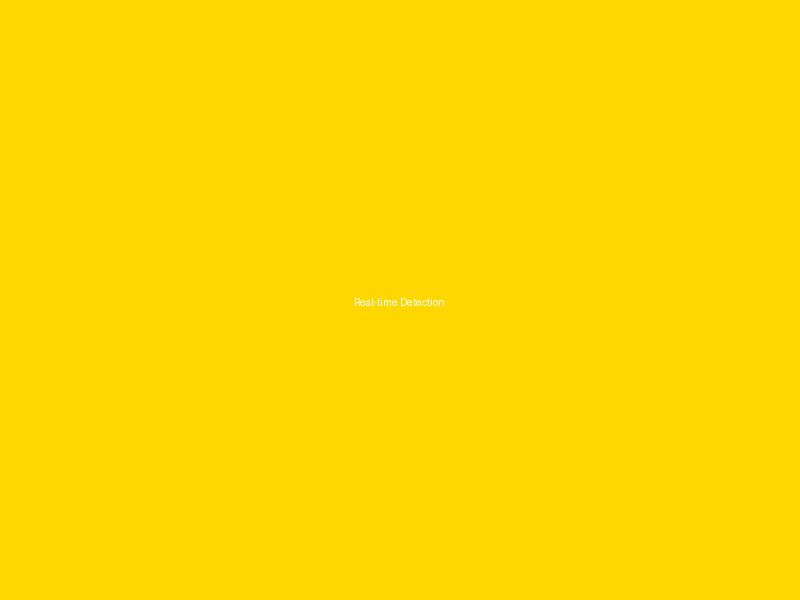
Real-time object detection and tracking
Projects
Deep Fake Detection
Jan 2024 – Apr 2024
Developed a video deepfake detection system leveraging multiple detectors with unique methodologies.
Built an ensemble framework where results were intelligently combined by a meta‑model based on detectors’ historical performance.
DDPM Image Generation
2024
Implemented a Denoising Diffusion Probabilistic Model (DDPM) for image synthesis as part of deep learning coursework.
Showcased diffusion‑based generative modeling and its applications in media synthesis and AI ethics demonstrations.
Adobe India Hackathon — Team Starks (Connecting the Dots)
Jan 2025
Built a lightweight CPU‑only offline system to transform static PDFs into dynamic, structured, persona‑aware knowledge artifacts.
Integrated quantized language models with object detection and semantic search to enable retrieval and summarization.
Fire Fighting Drone for Early Forest Fire Detection and Extinguishment
2018
Developed a drone capable of early forest fire detection and suppression with integrated surveillance and rapid response mechanisms.
Won multiple awards: CBSE Science Fair State Finalist, PPTIA Innovation Award National Finalist (Top 10), First Prize at Shastra Science Fair.